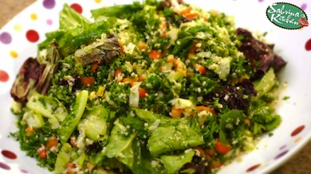

- RECIPES
- EPISODE GUIDE
MORE FROM THE SHOW

TABULEH SALAD
Here's how to make the dish
- start with 2 cups chopped parsely and another 2 cups chopped lettuce,
- add half a cup chopped tomatoes, and another of white onions, about a palm full of pre soaked couscous
- then in small bowl beat virgin olive oil and calamansi about half a cup each.. salt pepper..
- pour over mixed greens and toss!!!
- voila.. refreshing tabouleh great with lamb tajine or cumin barbeques!
From my kitchen to yours with love, Mwahhh! -S
Ingredients:
- virgin olive oil
- calamansi
- salt pepper
- 2 cups chopped parsely
- 2 cups chopped lettuce
- half a cup chopped tomatoes
- white onions